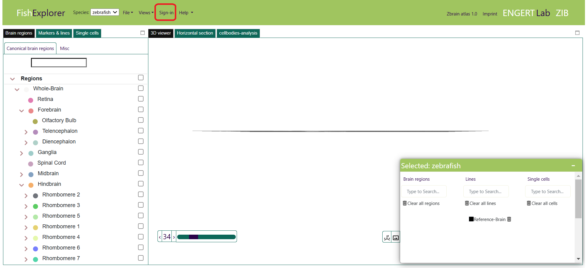
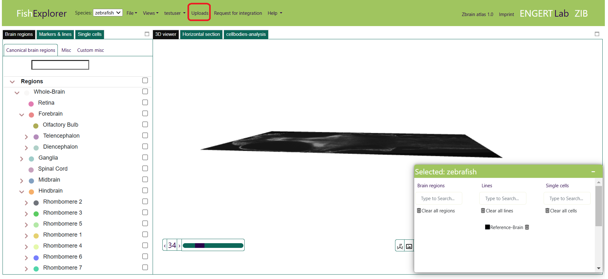
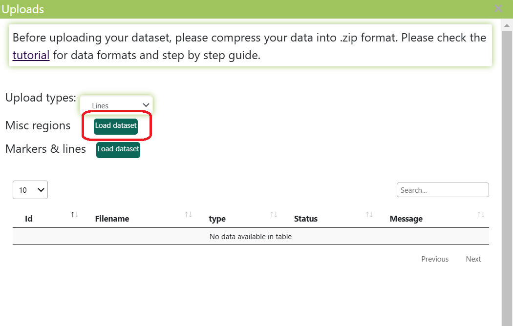
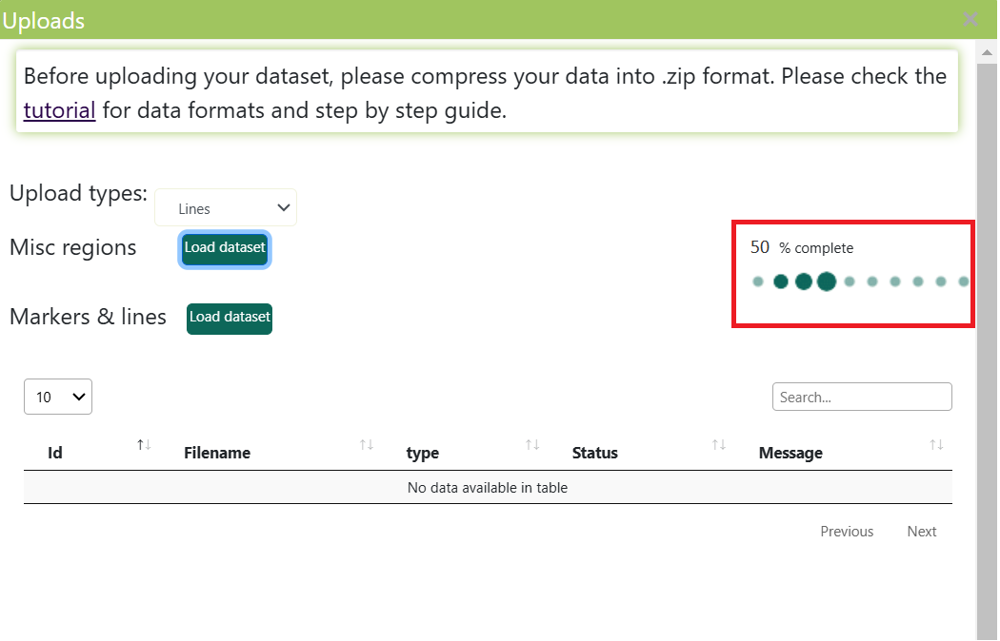
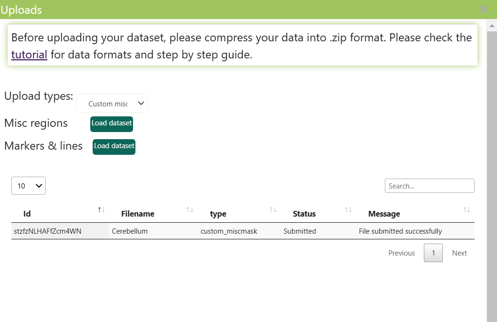
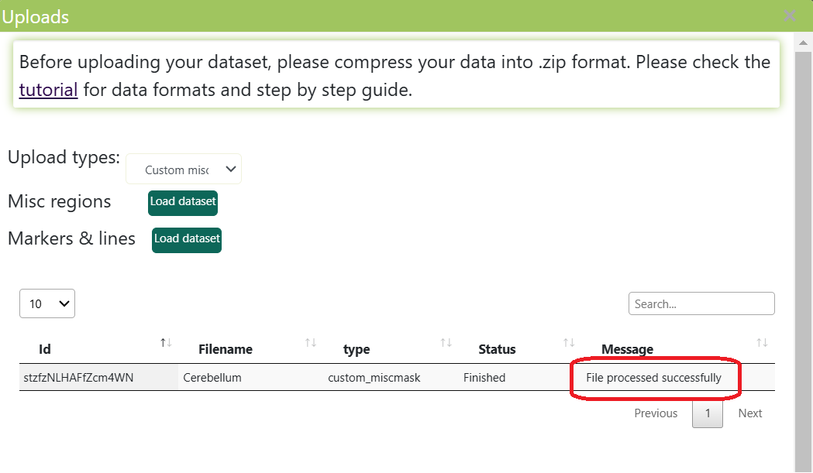
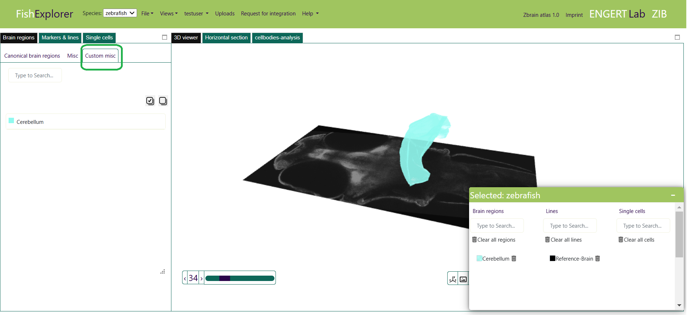

Uploading miscellaneous regions
-
Neurobiologists are able to segment their custom region masks based on anatomy, genetic and functional properties. We call such region masks “miscellaneous (MISC) masks”. Let us assume that
you want to compare your custom labeled masks with region masks that are already in the database.
To do so, please follow the steps described below:
Restart FishExplorer by hitting the refresh button of the browser. Then, the sign-in button will appear, as shown in the image below. If you are a first time user, please read the general settings tutorial in order to know how to register and login.
-
After signing in, an upload button (here, highlighted in red) will appear on the screen, as shown in the image below.

-
Click the “upload” button (highlighted in red in the image above) on the top menu bar.
This will bring up an upload window like the one shown in the image below.
The window consists of a selection list “Upload types”,
two uploading buttons (“Lines” and “Custom misc masks”), and a jobs table.
The “Upload types” allows the user to pick up either “Lines” and “Custom misc masks”. The “Lines” and “Custom misc masks” buttons allow users to upload custom markers and regions respectively. The jobs table displays the list of “submitted”, “finished” and “failed” jobs.
-
Click the “Load dataset” button next to the label “Misc regions” (highlighted in red in the
image above). Then select a “.zip” compressed tiff file. Make sure that the name of the tiff
file and the zip file are the same. The compressed “.zip” should also be less than 500 MB.
Currently we do not support multiple tiffs in a “.zip” file,
so users should make sure that there is only one tiff file in a zip.
The percentage of files uploaded will be displayed (as highlighted in red in the image below). .

-
Once the file has been successfully uploaded, the new job will be listed in a jobs
table with the name of the file and the message “File submitted successfully” (as shown in the image above).
Generally, the uploaded file will be processed in 3-5 minutes.

-
Once the file has been successfully processed, the corresponding job is updated in the jobs table
by setting the status to “Finished” and displaying the message “File processed successfully” (highlighted in red in the image below).
If processing fails, the corresponding entry in the jobs table is updated by setting the
status to “Failed” and displaying an error message.

-
The successfully processed misc mask will be added to the “Custom misc” tab (highlighted in green in the image below).
The “Custom misc” tab is a sub-tab under the “Brain regions” tab.
